An arrow \(f \in \operatorname{Hom}(B, C)\) is a monomorphism or a mono if for all arrows
\begin{equation*}
A \stackrel{g_{1}}{\underset{g_{2}}{\longrightarrow}} B \stackrel{f}{\longrightarrow} C
\end{equation*}
if \(f g_{1}=f g_{2}\) then \(g_{1}=g_{2}\text{.}\)
Similarly, an arrow \(f \in \operatorname{Hom}(A, B)\) is an epi or an epimorphism if for all arrows
\begin{equation*}
A \stackrel{f}{\longrightarrow} B \underset{g_{2}}{\stackrel{g_{1}}{\longrightarrow}} C
\end{equation*}
if \(g_{1} f=g_{2} f\) then \(g_{1}=g_{2}\text{.}\)
Here are some examples:
Example7.2.Monos and Epis.
In \(\Set\text{,}\) the monos coincide with the injective functions and the epis coincide with the surjective functions.
In \(R-\mod\text{,}\) the monos coincide with the injective functions and the epis coincide with the surjective functions.
In any category, every isomorphism is both epi and mono.
Exercise7.3.Epi and Surjective not the Same.
Show that the usual inclusion \(\mathbb{Z} \longrightarrow \mathbb{Q}\) is an epi in the category \(\Ring\text{.}\)
This should feel weird: it says being epi and being surjective are not the same thing. Similarly, being monic and being injective are not the same thing.
Exercise7.4.Mono and Injective not the Same.
Show that the canonical projection \(\mathbb{Q} \longrightarrow \mathbb{Q} / \mathbb{Z}\) is a mono in the category of divisible abelian groups. 1
An abelian group \(A\) is divisible if for every \(a \in A\) and every positive integer \(n\) there exists \(b \in A\) such that \(n b=a\text{.}\)
Exercise7.5.Monic and Epic in Poset Category.
Show that given any poset \(P\text{,}\) in the poset category of \(P\) every morphism is both monic and epic, but no nonidentity morphism has a left or right inverse.
There are some special types of objects we will want to consider.
Definition7.6.Initial and Terminal Objects.
Let \(\mathscr{C}\) be a category. An initial object in \(\mathscr{C}\) is an object \(i\) such that for every object \(x\) in \(\mathscr{C}, \operatorname{Hom}_{\mathscr{C}}(i, x)\) is a singleton, meaning there exists a unique arrow \(i \longrightarrow x\text{.}\) A terminal object in \(\mathscr{C}\) is an object \(t\) such that for every object \(x\) in \(\mathscr{C}, \operatorname{Hom}_{\mathscr{C}}(x, t)\) is a singleton, meaning there exists a unique arrow \(x \longrightarrow t\text{.}\) A zero object in \(\mathscr{C}\) is an object that is both initial and terminal.
Exercise7.7.Uniqueness of Initial and Terminal Objects.
Initial objects are unique up to unique isomorphism. Terminal objects are unique up to unique isomorphism.
So we can talk about the initial object, the terminal object, and the zero object, if they exist.
Example7.8.Initial and Terminal Objects.
The empty set is initial in \(\Set\text{.}\) Any singleton is terminal. Since the empty set and a singleton are not isomorphic in \(\Set\text{,}\) there is no zero object in \(\Set\text{.}\)
The \(0\) module is the zero object in \(R\)\(\Mod\text{.}\)
The trivial group \(\{e\}\) is the zero object in \(\Grp\text{.}\)
In the category of rings, \(\mathbb{Z}\) is the initial object, but there is no terminal object unless we allow the \(0\) ring.
There are neither initial nor terminal objects in the category of fields.
Definition7.9.Zero Arrow.
Let \(\mathscr{C}\) be a category with a zero object \(0\text{.}\) Given two objects \(x\) and \(y\) in \(\mathscr{C}\text{,}\) the zero arrow from \(x\) to \(y\) is the unique arrow \(x \longrightarrow y\) that factors through \(0\text{,}\) meaning the arrow given by composition of the unique arrows \(x \longrightarrow 0 \longrightarrow y\text{.}\) We will often denote both the zero object and the zero arrow by \(0\text{,}\) whenever it does not lead to confusion.
Remark7.10.
If a category \(\mathcal{A}\) has a zero object, then \(\operatorname{Hom}_{\mathcal{A}}(x, y)\) is always nonempty, since it contains at least the 0 arrow.
Remark7.11.
Composing the zero arrow with any other arrow always yields the zero arrow.
SubsectionAdditive Categories
An abelian category is a category that has just enough extra structure to behave like \(R\)-Mod: we have complexes and exact sequences, homology, the Snake Lemma, the long exact sequence in homology, and many other nice features. On the one hand, every abelian category embeds nicely in some \(R\)-Mod, so it is in some ways sufficient to study \(R\)-Mod. In other ways, the general nonsense definitions in an abelian category can sometimes give us a uniform, simple way to prove many results about \(R\)-Mod (and \(\mathrm{Ch}(R\)-Mod), and other related categories) all at once.
Definition7.12.Preadditive Cateogory.
A category \(\mathscr{A}\) is a preadditive category if:
For all objects \(x\) and \(y\) in \(\mathcal{A}, \operatorname{Hom}_{\mathcal{A}}(x, y)\) is an abelian group.
For all objects \(x, y\text{,}\) and \(z\) in \(\mathcal{A}\text{,}\) the composition
\begin{equation*}
g \circ\left(f_{1}+f_{2}\right)=g \circ f_{1}+g \circ f_{2} \quad \text { and } \quad\left(g_{1}+g_{2}\right) \circ f=g_{1} \circ f+g_{2} \circ f \text {. }
\end{equation*}
In the literature, preadditive categories are sometimes called Ab-enriched categories.
Example7.13.
Our favorite category \(R\)-Mod is a preadditive category; so is \(\operatorname{Ch}(R)\text{.}\)
We can talk about additive functors between any two preadditive categories.
Definition7.14.
Let \(\mathcal{A}\) and \(\mathscr{B}\) be preadditive categories. An additive functor\(\mathcal{A} \rightarrow \mathscr{B}\) is a functor such that the map
In any preadditive category \(\mathcal{A}\) with a zero object 0, the 0 arrow \(x \longrightarrow y\) coincides with the 0 of the abelian \(\operatorname{group} \operatorname{Hom}_{\mathcal{A}}(x, y)\text{.}\)
Remark7.16.
We can characterize the zero object 0 by the property that the zero arrow and the identity arrows on 0 coincide. To see this, notice that if \(1_{x}=x \stackrel{0}{\rightarrow} x\text{,}\) then given any arrow \(x \stackrel{f}{\rightarrow} y\text{,}\) we must have
and similarly any arrow \(y \stackrel{f}{\rightarrow} x\) must be 0. Then \(x\) is terminal and initial, and it must be the zero object.
Definition7.17.Additive Category.
An additive category is a preadditive category \(\mathcal{A}\) such that:
\(\mathcal{A}\) has a zero object.
\(\mathcal{A}\) has all finite products: given any two objects \(x\) and \(y\) in \(\mathcal{A}\text{,}\) there exists a product of \(x\) and \(y\) in \(\mathcal{A}\text{.}\)
Lemma7.18.
In an additive category, finite coproducts exist and they agree with products.
Proof.
Let \(x\) and \(y\) be objects in our additive category, and consider their product, which exists by assumption:
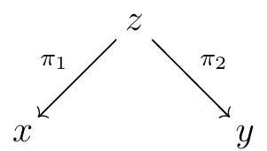
The universal property of the product give arrows \(\iota_{1}\) and \(\iota_{2}\) such that
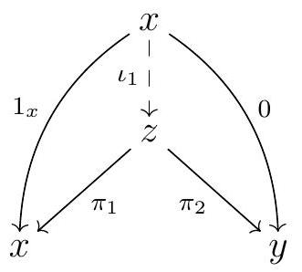
and
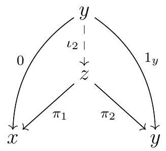
commute. We claim that \(z\) together with \(\iota_{1}\) and \(\iota_{2}\) form a coproduct for \(x\) and \(y\text{.}\) Given an object \(w\) and arrows \(x \stackrel{f}{\rightarrow} w\) and \(y \stackrel{g}{\rightarrow} w\text{,}\) we need to show that there exists a unique arrow \(h\) such that
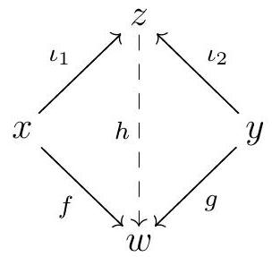
commutes.
To see such an \(h\) exists, consider \(h:=f \pi_{1}+g \pi_{2}\text{.}\) Then
\begin{equation*}
h \iota_{1}=f \underbrace{\pi_{1} \iota_{1}}_{1_{x}}+g \underbrace{\pi_{2} \iota_{1}}_{0}=f \quad \text { and } \quad h \iota_{2}=f \underbrace{\pi_{1} \iota_{2}}_{0}+g \underbrace{\pi_{2} \iota_{2}}_{1_{y}}=f
\end{equation*}
so indeed our proposed \(h\) does the job.
To show the uniqueness of such an \(h\text{,}\) we will use the fact that \(z\) together with \(\pi_{1}\) and \(\pi_{2}\) is a product for \(x\) and \(y\text{.}\) So suppose that \(h^{\prime}\) is another arrow such that \(h^{\prime} \iota_{1}=f\) and \(h^{\prime} \iota_{2}=g\text{.}\) Then \(h-h^{\prime}\) satisfies \(\left(h-h^{\prime}\right) \iota_{1}=f-f=0\) and \(\left(h-h^{\prime}\right) \iota_{2}=g-g=0\text{,}\) so it’s sufficient to show that the 0 arrow is the unique arrow \(\psi\) such that
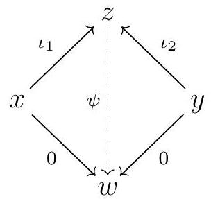
commutes. First, we claim that \(\iota_{1} \pi_{1}+\iota_{2} \pi_{2}\) is the identity arrow on \(z\text{.}\) And indeed, this map satisfies
and so does the identity arrow \(1_{z}\text{,}\) so the universal property of the product guarantees that \(\iota_{1} \pi_{1}+\iota_{2} \pi_{2}=1_{z}\text{.}\) Now if \(\psi \iota_{1}=0\) and \(\psi \iota_{2}=0\text{,}\) then
Notation 7.11. In an additive category \(\mathcal{A}\text{,}\) given objects \(A\) and \(B\text{,}\) the notation \(A \oplus B\) denotes the product \(\equiv\) coproduct of \(A\) and \(B\text{.}\)
Remark7.20.
Remark 7.12. If \(\mathcal{A}\) is additive category, the object \(A \oplus B\) is characterized by the existence of arrows
Lemma 7.13. Let \(F: \mathcal{A} \longrightarrow \mathcal{B}\) an additive functor between additive categories, and let 0 denote the zero object on both categories.
We have \(F(0)=0\text{.}\) For any two objects \(x\) and \(y, F(x \stackrel{0}{\rightarrow} y)=F(x) \stackrel{0}{\rightarrow} F(y)\text{.}\)
F preserves finite products and coproducts.
Proof.
We show the statement assuming \(F\) is covariant, and note that the argument in the contravariant case is essentially the same.
Since \(F_{x y}: \operatorname{Hom}_{\mathcal{A}}(x, y) \rightarrow \operatorname{Hom}_{\mathcal{B}}(F(x), F(y))\) is a group homomorphism and that the zero elements in the abelian groups \(\operatorname{Hom}_{\mathcal{A}}(x, y)\) and \(\operatorname{Hom}_{\mathcal{B}}(F(x), F(y))\) are the corresponding zero arrows, then
Now the zero arrow and the identity arrows of the zero object coincide, and so do their images by \(F\text{.}\) On the one hand, \(F\left(1_{0}\right)=1_{F(0)}\text{.}\) On the other hand, by what we have shown at the arrow level we have
Then the identity and the zero arrows on \(F(0)\) coincide, so by Remark 7.8 we must have \(F(0)=0\text{.}\)
Fix objects \(A\) and \(B\) and the canonical arrows
\begin{equation*}
A \stackrel{i_{A}}{\longrightarrow} A \oplus B, \quad B \xrightarrow{i_{B}} A \oplus B, \quad A \oplus B \stackrel{\pi_{A}}{\longrightarrow} A, \quad \text { and } \quad A \oplus B \stackrel{\pi_{A}}{\longrightarrow} B \text {. }
\end{equation*}
Any functor preserves identity arrows, so any additive functor \(F\) must satisfy
By Remark 7.12, this implies that \(F(A \oplus B)\) is the product \(\equiv\) coproduct of \(F(A)\) and \(F(B)\text{.}\)
Exercise7.22.
Exercise 81. Let \(\mathcal{A}\) be an additive category.
Show that an arrow \(f\) is a mono if and only if \(f g=0\) implies \(g=0\text{.}\)
Show that an arrow \(f\) is an epi if and only if \(g f=0\) implies \(g=0\text{.}\)
SubsectionKernels and Cokernels
We can now define kernels and cokernels.
Definition7.23.
Let \(\mathcal{A}\) be an additive category and \(f\) an arrow \(x \longrightarrow y\text{.}\) The kernel of \(f\) is an arrow \(k \stackrel{i}{\rightarrow} x\) satisfying the following properties:
\(k \stackrel{i}{\longrightarrow} x \stackrel{f}{\longrightarrow} y\) is 0 .
Given any \(g \in \operatorname{Hom}_{\mathcal{A}}(z, x)\) such that \(z \stackrel{g}{\longrightarrow} x \stackrel{f}{\longrightarrow} y\) is the zero arrow, there exists a unique arrow \(\varphi\) such that \(i \varphi=g\text{,}\) meaning that
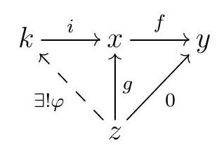
commutes. We denote the kernel of \(f\) by \(\operatorname{ker} f\text{.}\)
Remark7.24.
Remark 7.15. We claim that a kernel, if it exists, is always a mono. Indeed, suppose that
\begin{equation*}
z \stackrel{g_{1}}{\longrightarrow} k \stackrel{i}{\longrightarrow} x \stackrel{f}{\longrightarrow} y
\end{equation*}
are such that \(i g_{1}=i g_{2}\text{.}\) Then \(i\left(g_{1}-g_{2}\right)=0\text{,}\) so it’s sufficient to show that \(i g=0\) implies \(g=0\text{.}\) But then
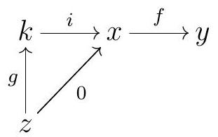
commutes, and \(f \circ 0=0\text{,}\) so 0 factors uniquely through the kernel. But both \(g\) and \(z \stackrel{0}{\rightarrow} k\) are such factorizations, so \(g=0\text{.}\)
We are used to thinking about the kernel of a map \(f\) as an object; but in this general context, the kernel is really an arrow, or more precisely, an object (the source of the kernel) and an arrow from that object to the source of \(f\text{.}\) We sometimes refer to the kernel as the pair (object, arrow). Also, we might use the notation \(\operatorname{ker} f \longrightarrow x\) for the kernel of \(f: x \rightarrow y\text{.}\) W e might also abuse notation and refer to the object that is the source of \(\operatorname{ker} f\) as the kernel of \(f\text{,}\) motivated by the familiar case of \(R\)-Mod. Nevertheless, the kernel of \(f\) is technically an arrow, not an object. A good reason for identifying the arrow ker \(f\) with its source object is the following rewriting of the definition:
Remark7.25.
Remark 7.16. If \(k_{1} \stackrel{i_{1}}{\longrightarrow} x\) and \(k_{2} \xrightarrow{i_{2}} x\) are both kernels of \(f\text{,}\) then there exist unique arrows \(g\) and \(h\) such that
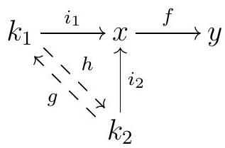
commutes. By Remark 7.15, kernels are always monic. But then \(i_{1} g h=i_{2} h=i_{1}\text{,}\) and since \(i_{1}\) is a mono, we must have \(g h=1\text{.}\) Similarly, \(h g=1\text{,}\) and \(g\) and \(h\) are isomorphisms.
This shows that if \(k \stackrel{i}{\longrightarrow} x\) is the kernel of \(f \in \operatorname{Hom}_{\mathcal{A}}(x, y)\text{,}\) the object \(k\) is, up to isomorphism, the unique object that satisfies the following universal property: for every object \(z\) and every arrow \(g: z \rightarrow x\) such that \(f g=0\text{,}\) there exists a unique arrow \(h: z \rightarrow k\) such that \(i h=g\text{.}\)
Definition7.26.
Definition 7.17. Let \(\mathcal{A}\) be an additive category and \(f \in \operatorname{Hom}_{\mathcal{A}}(x, y)\text{.}\) The cokernel of \(f\) is an arrow \(y \stackrel{p}{\rightarrow} c\text{,}\) denoted coker \(f\text{,}\) satisfying the following properties:
\(x \stackrel{f}{\longrightarrow} y \stackrel{p}{\longrightarrow} c\) is 0.
Given any \(g \in \operatorname{Hom}_{\mathcal{A}}(y, z)\) such that \(x \stackrel{f}{\longrightarrow} y \stackrel{g}{\longrightarrow} z\) is 0 , there exists a unique arrow \(\varphi\) such that \(i \varphi=g\text{,}\) meaning that
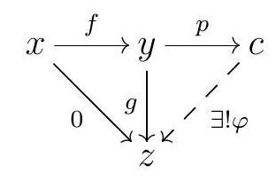
commutes.
We will sometimes use the notation \(y \rightarrow\) coker \(f\) for the cokernel of \(x \stackrel{f}{\longrightarrow} y\text{,}\) although once again the cokernel of \(f\) is an arrow rather than an object.
Example7.27.Example 7.18.
The kernels and cokernels in \(R\)-Mod are what we think they are: the inclusion of the usual kernel, and the projection onto the usual cokernel.
It’s not always true that all arrows have kernels or cokernels. For example, the category of finitely generated \(R\)-modules over some nonnoetherian ring \(R\) is additive, but it does not have all kernels. If \(I\) is some infinitely generated ideal in \(R\text{,}\) the kernel of the canonical projection \(R \longrightarrow R / I\) does not exist in our category. In fact, this is an epi but not a cokernel: it should be the cokernel of the inclusion map \(I \longrightarrow R\text{,}\) but that is not an arrow in our category.
While not all epis are cokernels and not all monos are kernels, the converse is true. Just like we saw for kernels, cokernels, if they exist, are always epi, and they are unique in the sense we described in Remark 7.16.
Exercise7.28.
Exercise 82. Let \(\mathcal{A}\) be an additive category.
Show if \(y \stackrel{\pi}{\longrightarrow} c\) is the cokernel of \(f \in \operatorname{Hom}_{\mathcal{A}}(x, y)\text{,}\) the object \(c\) is, up to isomorphism, the unique object that satisfies the following universal property: for every object \(z\) and every arrow \(g: y \rightarrow z\) such that \(g f=0\text{,}\) there exists a unique arrow \(h: c \rightarrow z\) such that \(h \pi=g\text{.}\)
Show that every cokernel in \(\mathcal{A}\) is epi.
Remark7.29.
Remark 7.19. Let \(\mathcal{A}\) be an additive category, and let \(f\) be any arrow such that ker coker \(f\) and coker ker \(f\) exist. Since \(f \circ \operatorname{ker} f=0\text{,}\) then by the universal property of the cokernel \(f\) factors uniquely through coker( \(\operatorname{ker} f\) ), say by coker \(\operatorname{ker} f \stackrel{g}{\rightarrow} y\text{.}\) Now
\begin{equation*}
\operatorname{coker} f \circ g \circ(\operatorname{coker} \operatorname{ker} f)=\operatorname{coker} f \circ f=0 \text {. }
\end{equation*}
By Exercise 85, coker ker \(f\) is an epi, and thus we must have coker \(f \circ g=0\text{.}\) Then \(g\) factors uniquely through ker coker \(f\text{,}\) so we get a unique arrow such that
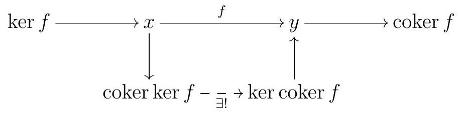
commutes.
Example7.30.
Example 7.20. Let’s see what this factoring looks like in the more familiar example of \(R\)-Mod. Given an \(R\)-module homomorphism \(f: M \rightarrow N\text{,}\) we get a commutative diagram
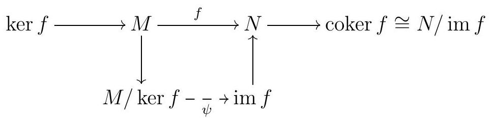
The map \(\psi\) is the isomorphism given by the First Isomorphism Theorem.
SubsectionDefinition of an Abelian Category
Definition7.31.Abelian Category.
Definition 7.21. An abelian category is an additive category \(\mathcal{A}\) such that
The category \(\mathcal{A}\) contains all kernels and cokernels of arrows in \(\mathcal{A}\text{.}\)
Every mono is a kernel of its cokernel.
Every epi is the cokernel of its kernel.
For every \(f\text{,}\) the canonical arrow coker \(\operatorname{ker} f \longrightarrow \operatorname{ker} \operatorname{coker} f\) is an isomorphism.
Ultimately, an abelian category is one that has just enough structure so that we can extend many of the desired properties of \(R\)-Mod. In particular, we will see that we can define complexes and their homology in any abelian category, and that the Snake Lemma and the long exact sequence in homology hold.
Remark7.32.
Remark 7.22. Let \(\mathcal{A}\) be an abelian category, and \(f\) any arrow. As described in Remark 7.19, we have a commutative diagram
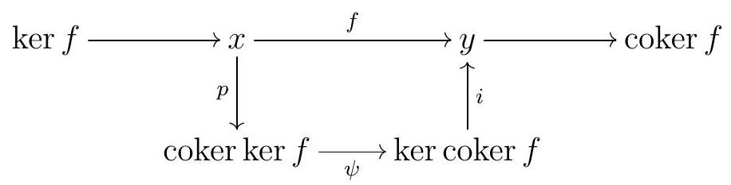
where \(\psi\) is now assumed to be an iso. Now kernels are mono and cokernels are epi, by Exercise 85, and composing an epi (respectively, mono) with an iso gives us an epi (respectively, mono). Therefore, we can factor \(f\) as a composition mono \(\circ\) epi.
Example7.33.
Example 7.23. In \(R\)-Mod, this factorization is just the factoring through the image of the homomorphism: any \(R\)-module homomorphism \(f: M \rightarrow N\) factors as
\begin{equation*}
M \rightarrow \operatorname{im} f \hookrightarrow N
\end{equation*}
Definition7.34.
Definition 7.24. Let \(\mathcal{A}\) be an abelian category, and consider an arrow \(x \stackrel{f}{\rightarrow} y\text{.}\) The image of \(f\) is \(\operatorname{im} f:=\operatorname{ker}(\operatorname{coker} f)\text{.}\)
Following Remark 7.22, the source of \(\operatorname{im} f=\operatorname{ker}\) coker \(f\) is the unique (up to unique isomorphism) object such that \(f\) factors as
\begin{equation*}
x \xrightarrow{\text { epi }} \operatorname{im} f \xrightarrow{\text { mono }} y .
\end{equation*}
Exercise7.35.
Exercise 83. Let \(\mathcal{A}\) be an abelian category.
Show that \(f\) is a mono if and only if \(\operatorname{ker} f=0\text{.}\)
Show that \(f\) is an epi if and only if \(\operatorname{coker} f=0\text{.}\)
Remark7.36.
Remark 7.25. If \(\mathcal{A}\) is an abelian category, its opposite category \(\mathcal{A}^{\text {op }}\) is also abelian. This is just a consequence of the fact that all the requirements to be an abelian category come together with the dual requirements, so everything automatically dualizes well.
Example7.37.
Example 7.26. Here are some examples and nonexamples of abelian categories.
The category \(R\)-Mod is an abelian category.
The category of free \(R\)-modules is additive but not abelian, as kernels and cokernels do not exist in general.
The category of finitely generated \(R\)-modules is abelian if and only if \(R\) is noetherian, which is exactly the condition we need to guarantee the existence of kernels and cokernels. For a general (nonoetherian) ring \(R\text{,}\) the category of noetherian \(R\)-modules is abelian.
The category of Hilbert spaces with continuous linear functions is an additive category. The monos are injective linear maps, and the epis are maps with dense image. The kernels are the usual kernels, while the cokernel of \(f: X \longrightarrow Y\) is given by the orthogonal projection \(Y \longrightarrow \overline{f(X)}{ }^{\perp}\text{.}\)
However, we claim that this is not an abelian category, since a mono might not be the kernel of its cokernel. Indeed, if \(X \hookrightarrow Y\) is a dense inclusion that is not surjective, then this mono is not the kernel of its cokernel: its cokernel is
\begin{equation*}
Y \longrightarrow \overline{f(X)}{ }^{\perp}
\end{equation*}
but \(\overline{f(X)}=Y\) and thus \(\overline{f(X)}{ }^{\perp}=\{0\}\text{,}\) so ker coker \((f)=Y\text{,}\) while \(f(X) \neq Y\text{.}\)
Remark7.38.
Remark 7.27. Suppose that \(g\) factors through \(f\text{,}\) meaning that there exists \(h\) such that
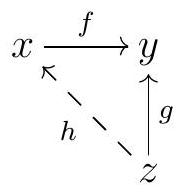
commutes. Then \((\operatorname{coker} f) \circ g=(\operatorname{coker} f) \circ f \circ h=0\text{,}\) so \(g\) factors through \(\operatorname{ker}(\operatorname{coker} f)=\operatorname{im} f\text{,}\) meaning we have another commutative diagram
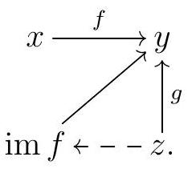
Exercise7.39.
Exercise 84. Show that the kernel of \(x \stackrel{0}{\rightarrow} y\) is the identity arrow \(1_{x}\text{,}\) its cokernel is the identity arrow \(1_{y}\text{,}\) and \(\operatorname{im}(x \stackrel{0}{\rightarrow} y)=0\text{.}\)
Exercise7.40.
Exercise 85. Let \(\mathcal{A}\) be an abelian category, \(g\) an epi, and \(f\) a mono. Then \(\operatorname{ker}(f g)=\operatorname{ker} g\text{,}\)\(\operatorname{coker}(f g)=\operatorname{coker} f\text{,}\) and \(\operatorname{im}(f g)=\operatorname{im} f=f\text{.}\)